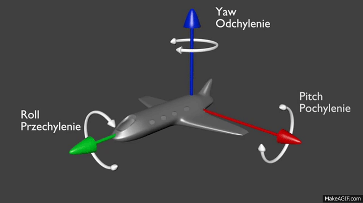
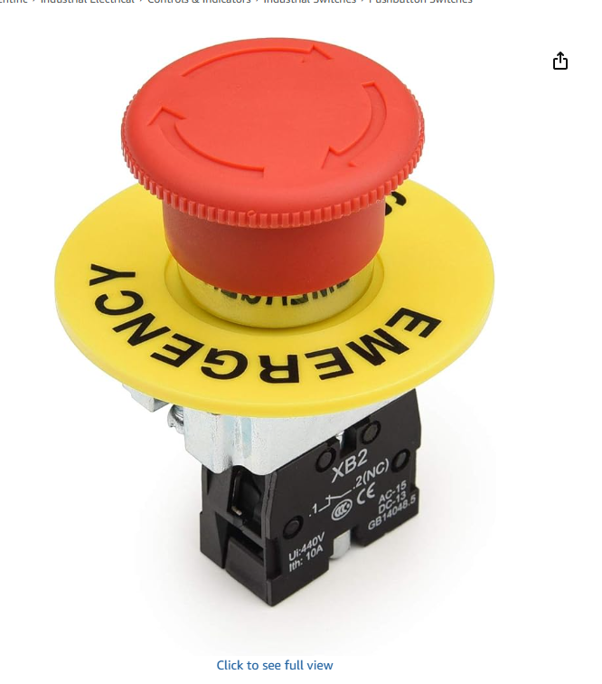
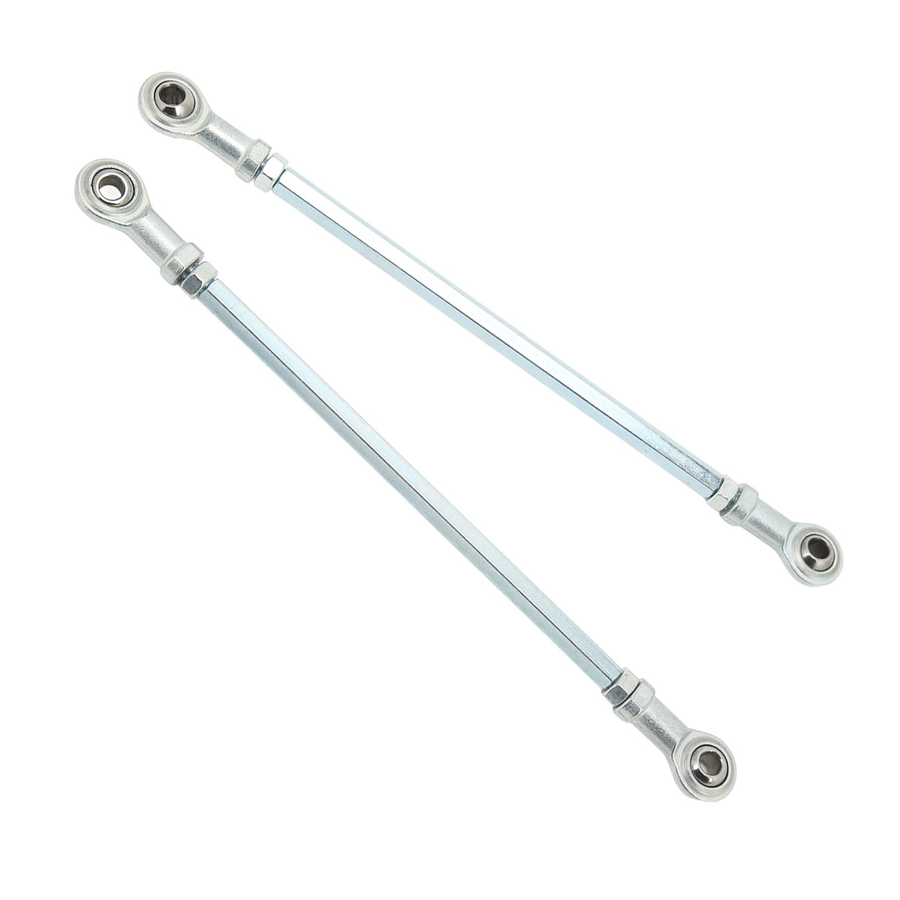

DIY Motion
Rig Pitch.
A presentation for an investor — teaching mechanical design, applied physics, electrical safety, fabrication, and systems thinking through a compact ~$480 motion-platform build.
By Pranav Emmadi
Arrow keys · Swipe · Drag 3D model
Speaker Notes
Start with the headline: this is a compact engineering project with a fixed budget, a clear build plan, and a clear learning outcome.
Use the movable model on the right first so the overall shape is obvious before diving into details.
Make it clear that this is a parts-funding pitch: the design work is real, and the next step is buying the parts to build it.
Building my own designed sim rig teaches me more than buying one.
Why I want to build it myself
- +I want a realistic driving experience that is actually fun to use after it is built
- +Building it myself teaches mechanics, electronics, fabrication, tuning, and testing all at once
- +It is my own design, so every measurement and part choice has to make sense
- +The result is both a usable sim rig and a real engineering build I can explain
What I optimized instead of copying a commercial rig
- +Commercial rigs cost $2,000–$15,000. I optimized for the motion cues that matter most, not premium finish or extra luxury parts
- +I kept full-rig motion, safety hardware, and upgradeable electronics because those change the experience the most
- +I saved money with a simple wood frame, a 2DOF layout, and parts that still stay useful later
- +That means the budget goes into motion, control, and safety instead of expensive fabrication
"I want to build something that gives me a realistic driving experience and is fun, but also something that teaches me how real systems are designed, powered, tested, and improved."
Speaker Notes
Frame this as the motivation slide: the point is not just owning a sim rig, but learning by designing one from scratch.
When you mention commercial rigs, explain what was optimized: motion feel, safety, and upgradeable parts first; expensive finish and extra complexity later.
Yaw, pitch, and roll.
Before explaining the mechanism, these are the three ways a simulator can rotate. For my sim, pitch and roll matter the most because they match braking, acceleration, and cornering, which are the feelings I want most in the first version.

This airplane GIF makes the difference easy to see: pitch tips forward/back, roll leans side-to-side, and yaw rotates left/right around a vertical axis.
Pitch is the brake and acceleration feeling. When the rig tips forward or back, it makes speeding up and slowing down feel much more real.
Roll is the cornering feeling. It lets the rig lean left or right in turns, which is one of the easiest motion cues to notice.
Yaw rotates the whole rig left or right. It can help with drifting or the back of the car stepping out, but it adds much more structure, cost, and floor space.
I chose pitch first for braking and acceleration, and roll for cornering and body lean. Those are the two most important motion cues for the kind of realistic driving experience I want, so they give the most value in V1.
I did not do yaw in V1 because it would mean rotating the whole simulator on a bigger moving base. That adds more structure, more torque, more wiring complexity, and more cost, while pitch + roll already cover the most important everyday driving feelings.
- +Bigger and more expensive moving base
- +Harder mechanically and electrically for a first build
- +Pitch + roll already cover braking, acceleration, and cornering
Speaker Notes
Put this before the mechanism slide so the audience knows the three motion words first.
Keep the explanation simple: pitch is for braking and acceleration, roll is for cornering, and yaw is rotation of the whole rig.
The main decision point is that pitch and roll matter most for this sim, while yaw costs much more and adds less value in a first version.
A cockpit that physically tilts.
This is the real Onshape Assem4 motion. The lower base stays on the floor, the upper frame carries the driver controls, and the rear motors move that upper frame through the blue linkage rods.
The bottom frame is the part that stays on the floor. It holds the motors, power parts, and the rest of the structure.
The top frame is the part that carries the seat, wheel, and pedals. This is the part that tilts to create motion cues.
The front pivot joint keeps the moving frame attached while still letting it tilt. It is basically the main front hinge of the rig.
The rear motors spin crank arms, and the blue rods push and pull the back of the moving frame. That is what creates pitch and roll.

Speaker Notes
Use this slide to name the main physical pieces before getting into the detailed motion explanation.
Point to the GIF and show which parts stay fixed and which parts tilt.
The key simple idea is lower frame fixed, upper frame moving, front pivot joint connected, rear motors doing the lifting.
Pitch and roll, shown two ways.
The real Onshape GIF is best for seeing pitch. The roll tab uses a simpler diagram, because opposite left/right rear motion is easier to understand there.
The Onshape GIF shows the real mechanism and motion path for pitch. The roll diagram is simpler, so the left/right lean is easier to see quickly.
This GIF is the accurate reference for the real mechanism. It is best for showing pitch, where the upper frame tips forward/back and gives the braking and acceleration feeling.
For roll, the rear motors go opposite directions. One side rises while the other drops, and the whole upper frame leans around the fixed front pivot point (purple). That lean is the cornering cue you feel in the sim.
Speaker Notes
Use the pitch tab first because the real GIF is the most honest reference for the actual mechanism.
Then switch to the roll tab and point out the one thing that matters: the purple front pivot stays fixed while the rear of the frame leans left and right.
What the user would actually feel.
This rig does not create full real-car G-forces, but it can recreate the most important motion cues your body notices in a race car: braking, acceleration, cornering load transfer, curbs, hills, and quick direction changes.
User action: slam the brakes at the end of a straight.
Rig cue: the frame tips slightly forward in pitch.
Real-life feeling: like the front of the car loading up under braking.
User action: step on throttle coming out of a corner.
Rig cue: the frame tips back slightly.
Real-life feeling: like the rear of the car squatting under power.
User action: turn in fast for a real corner.
Rig cue: the platform rolls to one side.
Real-life feeling: like body roll and weight shifting to the outside tires.
User action: clip a curb or run over a rough edge.
Rig cue: a quick pitch or roll pulse.
Real-life feeling: a short jolt instead of the rig staying perfectly flat.
User action: go uphill, downhill, or over a crest.
Rig cue: pitch angle changes with the road profile.
Real-life feeling: the car's nose pointing up or down instead of staying visually flat.
User action: quick chicane or fast steering correction.
Rig cue: roll reverses direction quickly.
Real-life feeling: like the car loading one way, then snapping back the other way.
The goal is not to throw the user around. The goal is to recreate the important cues the brain uses to understand what the car is doing: front-to-back weight transfer and side-to-side load transfer.
It does not create full sustained G-forces, full yaw rotation, or every small road texture. It is a focused 2DOF cueing system that gives the most important feelings first.
Speaker Notes
This is the family slide. Translate everything into driving feelings, not engineering words.
The strongest examples are braking, acceleration, corner entry, curbs, hills, and quick left-right transitions.
Be honest that it does not create full real-car G-forces. The point is recreating the most important motion cues in a compact rig.
Mechanical engineering concepts.
Every part is a lesson. You can't pick random numbers — the geometry has to be calculated.
Crank 279mm, rod 385mm, tab Z=702.9mm, motor Z=128.9mm — a constrained system. Change one value and every tilt angle changes. Calculated full forward kinematics.
The moving frame has exactly 2 DOF. The front pivot joint and two rear linkages enforce that. Understanding how constraints remove unwanted motion is a core mechanical principle.
The front pivot keeps the upper frame attached while still letting it tilt. I still had to check backlash, angular limits, and strength so the motion stays controlled.
Pivot at X=200mm. CG ~X=800mm. ~180 lb total. Front pivot takes ~40%, leaving ~54 lb per rear motor. Lever calculation confirmed 250W motors are sufficient.
At 279mm, crank tip travels ±279mm in ±90° range. Larger = more tilt but more stress. Chosen to give ±8.8° without geometric over-centering at the extremes.
If the crank radius is too large, the linkage over-centers past vertical and locks or reverses. I verified the system stays within ±75° crank travel. Wrong = rig fails on first use.
Speaker Notes
Frame this slide as the hidden engineering layer: every number here controls whether the rig moves smoothly or jams.
Point out that 2DOF is not accidental. The pivot and the two rods remove every motion except pitch and roll.
End on the over-center warning because it shows the geometry was checked for failure, not just for appearance.
Simple physics behind the motion.
These are the same equations from class, but each one matches something easy to picture in real life: a clock hand, a fixed-length rod, a door hinge, and sharing a heavy box.
Click a formula to see the exact numbers I used in the rig calculations.
The crank arm moves in a circle, just like the end of a clock hand.
The blue linkage cannot stretch, so the geometry has to stay honest.
The front pivot joint acts like a hinge, so a small rear lift becomes tilt.
The front pivot carries part of the load, so each rear motor does less work.
The crank tip height changes with circular motion.
As the motor turns, the crank end moves up and down in a circle. That is the first step that creates motion in the rig.
The 385mm rod has a fixed length, so it constrains the frame position.
The rod cannot magically get longer or shorter. That fixed length forces the upper frame to a real, predictable position.
The rear lift turns into frame angle because the front acts like a hinge.
A rear vertical change of about 141mm becomes about 8.8 degrees of tilt, which is enough to feel braking, acceleration, and cornering cues.
The pivot carries some weight, so the motors do not lift the full 180 lb alone.
Because the front pivot holds part of the rig, each rear motor only sees about 54 lb instead of the full combined weight.
Rear force becomes crank torque, which is the key check behind the motor choice.
After estimating the rear load per motor, I multiply that force by the crank radius to estimate required torque. That is how I checked the 250W motors were realistic for the rig instead of just a guess.
These formulas are why the part choices are not guesses. They show the motors, crank size, rod length, and motion range were picked because they work together, not because they looked about right.
Speaker Notes
Keep the formulas on screen, but translate each one immediately: clock hand, fixed rod, door hinge, and sharing a heavy box.
The point of this slide is that the design is calculated and understandable at the same time, not mysterious.
Tie it back to the funding ask: these calculations are why the parts list is worth trusting.
Physics concepts that can improve the rig.
This is separate from my general physics roadmap. The point here is simpler: these are physics ideas I can apply directly to this rig to improve how it is built, tuned, and felt.
What I can improve: frame dimensions, hole placement, linkage length, and where I need adjustability if real parts are a little off from CAD.
What I would notice: better alignment, easier assembly, and smoother motion with less trial-and-error fixing.
What I can improve: crank radius, linkage geometry, neutral position, and total tilt range.
What I would notice: the rig would feel smoother, more natural, and less mechanically awkward through the whole motion range.
What I can improve: frame support, pivot quality, moving-mass placement, and friction points that waste motor effort.
What I would notice: less strain on the motors, less wasted power, and a rig that feels stronger and more reliable.
What I can improve: how I tune the motion so pitch feels more like braking/acceleration and roll feels more like actual turning.
What I would notice: the rig would feel more like real driving cues and less like random movement.
What I can improve: motor sizing confidence, lever geometry, crank length, and how much rear load each motor really sees.
What I would notice: I would know how much I can safely change the geometry and immediately feel whether those changes made the sim stronger or weaker.
If the rig exists while I am learning, physics stops being just theory. I can learn a concept, change something real in the sim, and actually feel what that change does. That makes the project something I can keep improving instead of just finishing once.
Speaker Notes
Do not mention the separate roadmap here. Just frame this as physics ideas that can directly improve the rig.
The strongest line is that I can actually feel the effect of what I learn instead of only solving it on paper.
A real 12V power system.
2×250W motors, up to 50A combined = 600W total. Designed like industrial equipment.
I also chose the core electrical parts from models with strong reviews and a known track record, not random no-name listings.
Click any block in the power path to expand more info about what it does.
Power path detail
Click one of the power blocks above to expand what that part does in the 12V system.
This is the physical emergency-stop button the user hits to shut the rig down instantly. It cuts 12V to the contactor coil, which drops the contactor open and removes motor power without switching the motor leads directly. Hardware always wins over software.

When the rig slows a motor down, that motor can act like a generator and push energy back into the system. A driver with regen braking is built to handle that energy cleanly instead of letting voltage spikes hit the power supply and electronics.
Speaker Notes
Stress that this is wired like equipment, not like a toy. Power path, protection, and shutdown were all designed up front.
Call out the contactor detail slowly: the E-stop kills the coil so the system opens safely without arcing across the motor leads.
Explain regen braking simply: when the moving rig slows down, the motors can feed energy back, so the driver needs to handle that safely.
If someone asks what a specific part does, click that block and use the expanding detail panel instead of crowding the whole slide with text.
Finish with the line that hardware wins over software, because that is the main safety message on this page.
If something goes wrong, what stops it?
These are the more serious scenarios family usually worries about: smoke, fire, shorts, runaway motion, and overheating. Click any one to see what part of the system stops it, reduces it, or still depends on the operator using the E-stop.
Tap any scenario above
Speaker Notes
This is the family reassurance slide. Press through the scarier cases instead of just saying “it is safe.”
The strongest cases are wire starts smoking, something catches fire, main short, controller keeps driving, and emergency stop.
Be honest on the worst cases: once there is real smoke or flame, the answer is human emergency action, not pretending the rig magically solves it alone.
Trade-offs & logic.
Not a kit build. Each choice was a real engineering tradeoff — wrong decision = real cost.
Seat movers leave wheel and pedals stationary — mismatch makes motion feel wrong. A full rig moves everything coherently.
Chose: Full rig mover$20 actuators: ~5W effective, 25mm/s. 250W wiper + 279mm crank: 300mm/s, 50× more power. Mathematically eliminated.
Chose: Wiper motors (50× faster)With pivot at X=200mm, rear motors only see ~60% of total load. Two rear pivots = motors lift 100% of weight.
Chose: One front pivot joint~$30 vs ~$150+. Rework: re-drill ($0) vs re-weld ($30+). Lighter moving frame. 2×4 handles the forces easily.
Chose: 2×4 lumberCytron ($79) has no regen braking → back-EMF spikes PSU on deceleration. $46 premium on a 50A system is worth it.
Chose: Sabertooth 2×32Fixed rods: off by 5mm → re-drill the crank. Aramox adjustable: dial in neutral after assembly. ~$5 more. No reason not to.
Chose: Aramox 370–400mmSpeaker Notes
Present these as trade studies, not opinions. Each box answers a specific engineering choice with cost or performance logic.
The strongest examples are full rig versus seat mover, wiper motors versus actuators, and Sabertooth versus Cytron.
This slide is useful for showing that the project was designed intentionally from the start.
What this purchase buys first.
Nothing is built yet. This deck is asking for the parts to build V1 first, then tune and improve it over time. The core parts were picked so later upgrades reuse them instead of replacing everything.
- 2DOF pitch + roll rig
- 2×4 wood frame
- 2× 250W motors
- Sabertooth 2×32
- SMC3 + SimTools
- E-stop + fuses
- Buy the parts and start the build
- Cut and drill the frame
- Mount seat, wheel, and pedals
- Wire the 12V system
- Set neutral linkage length
- Tune first motion profiles
- Do safety testing
- Refined geometry
- Better sensors
- Better seat mount
- Cleaner brackets
- Tuned motion profiles
- 4-actuator path
- Yaw later if worth it
- Telemetry / logging
- Custom brackets
- Custom chassis

Speaker Notes
Be direct that nothing is built yet. This slide exists to show what the funding buys first and why that first purchase is still smart long term.
The most important point is that the core parts are not throwaway purchases. They still help if the project grows later.
Actual BOM sheet, live in the deck.
This is the real Google Sheets bill of materials, embedded full-size so the audience can scroll the exact parts list and totals.
Open the button above for the full Google Sheets view
Why this is worth funding.
What this project actually teaches
Why this funding ask makes sense
The money goes to motors, safety parts, a 600W PSU, controller hardware, and the frame materials needed to actually build V1.
I got the idea after seeing compact motion systems that use one front pivot with two rear crank linkages. Similar linkage strategies show up in seat movers, DIY motion platforms, and other motor-driven tilt rigs, then I turned that idea into my own full-rig layout.
Instead of copying an expensive commercial rig, I kept the full-rig motion concept and removed the costly finish, extra DOF, and heavy fabrication that are not needed for V1.
A working 2DOF motion platform with the CAD, BOM, tuning, and safety design behind it is a real portfolio piece, not just a purchase.
Speaker Notes
This is where you shift from parts to return on investment. The point is that the project teaches engineering through a real build.
Contrast it clearly with a normal gaming purchase: this money goes into motors, power electronics, safety hardware, and fabrication.
End on the portfolio angle because it explains why the finished rig matters beyond just using it.
A polished motion rig
that is 100% my own.
This is my own design from end to end: drivebase, linkage layout, motion geometry, electrical system, safety plan, CAD, BOM, and tuning path. I want to build something real that companies build, but do it myself and understand every part of it.
Budget: about $480. Sabertooth $125. Motors $80. PSU $70. Can spread over a few weeks.
Questions? I can walk through any part of the design in detail.
Speaker Notes
End by stressing that this is fully my own design from drivebase to motion to electrical system, not a copied kit or a random parts purchase.
The strongest point here is that I can keep improving the rig as I learn more physics, and I can actually feel theory changing the behavior of a real machine.